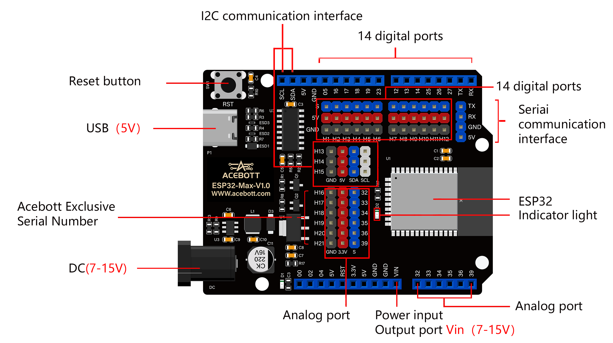

QA007/QA008 ESP32 Max V1.0 Controller Board¶

1.Introduction
This is a general WIFI + Bluetooth controller board based on ESP32, integrated ESP32-Room-32 module and compatible with Arduino.
It has high-speed SDIO/SPI, UART, I2S and I2C. In addition, it is equipped with freeRTOS operating system, which is quite suitable for Internet of things and smart home.
Provides a rich fast interface, convenient for developers to use.
If you want to know more about ESP32, click here
If you want to program the esp32 with Arduino, click here
2.Specifications
| Connectivity | WI-FI | Bluetooth LE |
|---|---|
| Chip | ESP-WROOM-32 |
| Clock | 240MHz |
| Ram | 448KB |
| FLASH | 4MB |
| Interfaces | UART | I2C | SPI | CAN |
| Input Voltages | 6-18V |
| Pinout | 25(DIGITAL) | 15(ANALOG)| 25(PWM) | 2(DAC) | 2(UART) | 2(SPI) | 1（I2C） |
3.PCB Dimensions
4.Pin Interfaces
Here is an explanation of what every element and interface of the board does:
5.Sample Code
1 2 3 4 5 6 7 8 9 10 11 12 13 14 15 16 17 18 19 20 21 22 23 24 25 26 27 28 29 30 31 32 33 34 35 36 37 38 39 40 41 | /*
When a network is found in the environment,
the number and name of all nearby networks will be obtained and displayed in the serial port,
and the blue indicator will light up.
*/
#include "WiFi.h"
void setup()
{
Serial.begin(115200);
pinMode(02,OUTPUT);
//set WiFi to station mode and disconnect from an AP if it was previously connected
WiFi.mode(WIFI_STA);
WiFi.disconnect();
delay(100);
Serial.println("Setup done");
}
void loop()
{
Serial.println("scan start");
// WiFi.scanNetworks will return the number of networks found
int n = WiFi.scanNetworks();
Serial.println("scan done");
if (n == 0) {
Serial.println("no networks found");
} else {
Serial.print(n);
Serial.println(" networks found");
digitalWrite(2, HIGH);//the blue indicator lights up
for (int i = 0; i < n; ++i) {
//print SSID and RSSI for each network found
Serial.print(i + 1);
Serial.print(": ");
Serial.print(WiFi.SSID(i));
Serial.println((WiFi.encryptionType(i) == WIFI_AUTH_OPEN)?" ":"*");
delay(10);
}
}
Serial.println("");
// wait a bit before scanning again
delay(5000);
}
|
6.Test Result
When a network is found in the environment, the number and name of all nearby networks will be obtained and displayed in the serial port, and the blue indicator will light up.
The serial port display effect diagram is as follows：
7.Package List
ESP32 Max V1.0 Controller Board * 1pcs
Type-C cable * 1pcs
8.Get One Now
B2B Business: info@acebott.com
Individual buyer: shop on aliexpress